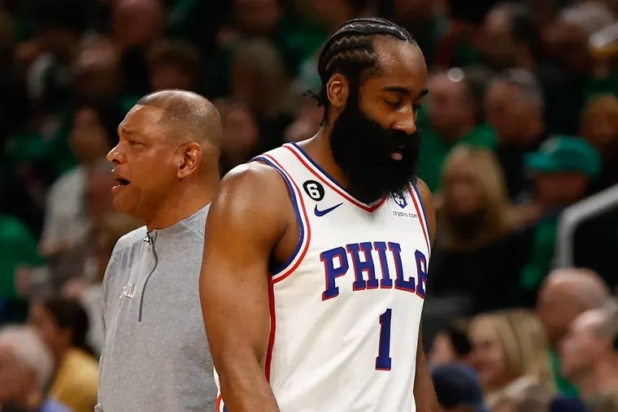
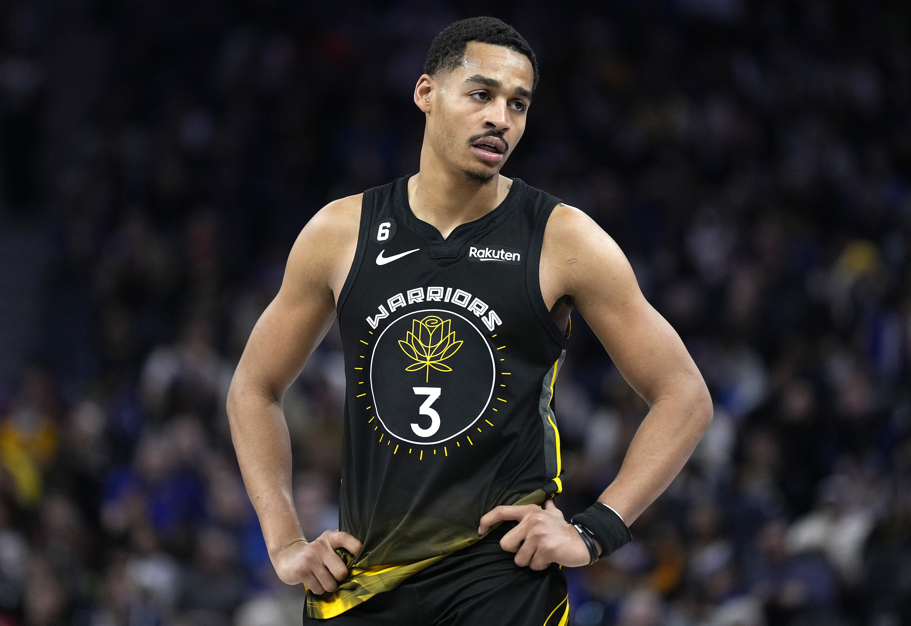
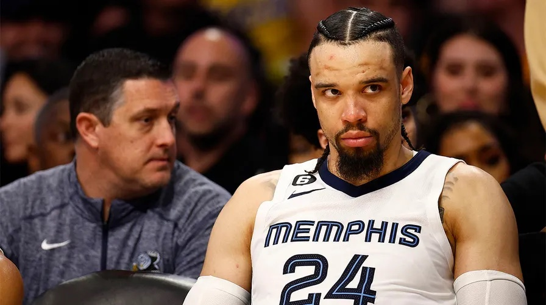
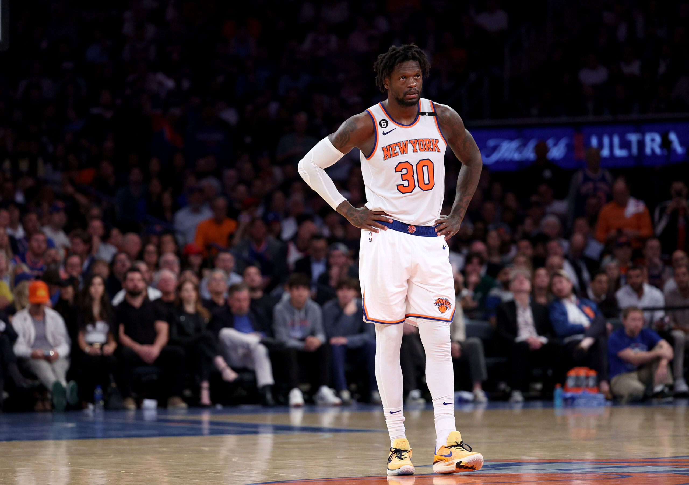
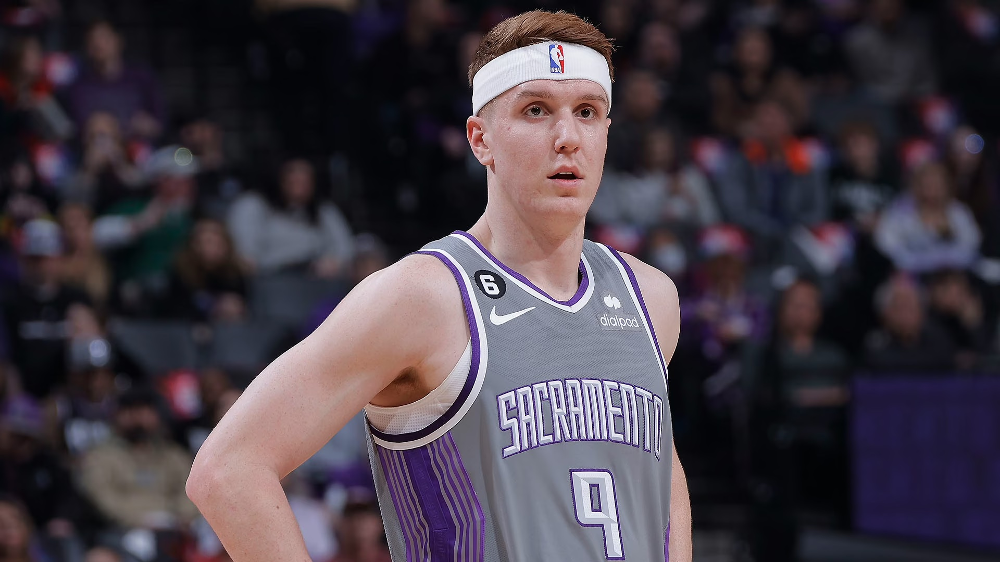

2023 All-Cancun Team: Biggest NBA Postseason Disappointments
Brandon Novarro | May 22, 2023 • 4 min
NBA playoff season. A spectacle that’s a cutthroat mix of heart-stopping action, heroic legacies, and vivid dreams of championship glory crashing harshly to the ground. Every team dreams of the championship, but when dreams meet the cold, harsh court of reality, the fallout can get messy. Some squads return home with more questions than answers, while some players pack their bags for a one-way trip to the unemployment office. But hey, one man’s loss is another’s gain, right? Enter the Cancun-bound scouting committee, who've had their eyes wide open this postseason, hunting for stars fallen from grace. Fortunately, some of these players can be fortunate enough to find a new home next season…in Cancun! With the Nuggets and Heat just one win each from sweeping and heading to the NBA Finals, it is time to unveil the star prospects the scouts have had their eyes on!
PG: James Harden
With a 45-point road win in game one without Joel Embiid, and a magical 42-point game four performance complete with a game-winning three, Harden seemed like he was finally laying to rest the ghost of his playoff past…until he didn’t. With his miserable 13 and 9-point acts, where he shot 25 and 27.3 percent from the field, respectively, Harden pulled off a finale that would put even Ben Simmons' infamous 2021 conference semis disaster to shame. Three consecutive fourth-quarter zeroes to end the series, that's the kind of consistency Cancun could use!
SG: Jordan Poole
Our next star, Jordan Poole, graced the postseason with such virtuosity after a 20.4 ppg regular season, it was poetic. With a 10.3 ppg postseason shooting at 34.1% from the field and 25.4% from three, Poole’s performance packed a real punch (although not as hard a punch as Draymond Green's) and certainly caught our scouts' attention. Ending the Lakers series with scores of 6, 5, 0, 11, and 7 in the final five games, he definitely has potential. However, scouts have been told Poole and Ice Spice are a package deal.
SF: Dillon Brooks
Dillon Brooks, what a sensation! With 10.5 ppg and a stellar 10-41 from downtown, Brooks was a force to reckon with. He even had the audacity to poke the aging bear, Lebron James. Albeit, he might've poked a bit too hard, getting ejected in game 4 for a low blow. It seems the Lakers finally got some respect from Brooks, sending the Grizzlies home with a 40-point goodbye gift. Lucky for our Cancun-bound crew, Brooks has been left stranded by the Grizzlies and is ripe for the picking.
PF: Julius Randle
Who needs consistent performers? Not Cancun, surely. Randle, after scoring an average of 25.1 ppg with 46.0% from the field and 34.3% from three in the regular season, transformed into an altogether different beast with 16.6 ppg on 37.4 from the field and 25.8% from three during the playoffs. He outdid his own disappointing 2021 postseason performance despite Jalen Brunson's herculean efforts of 32, 28, and 41 points in the final three games of the Heat series. Randle might be setting a record for consistency in playoff underperformance and the Cancun scouts have had their eyes on him for a while.

C: Jarrett Allen
For the position of Center, Cancun is on the lookout for a true glass cleaner, someone who can help out on the boards, and Allen fits the bill, sort of. After averaging 9.8 RPG in the season, he managed a shocking 4.3 RPG in 37.7 mpg during the last three games against the Knicks. Cleveland was run over on the offensive glass, a major factor in the Knicks making mincemeat of the Cavs in just five games. Just the kind of talent Cancun needs to... err, liven up the game.
6th Man: Kevin Huerter
The spark-plug shooter, the sixth man, every team's secret weapon. And who better to fill the role than Huerter? After an impressive 40.2% from three in the regular season, Huerter turned up the heat in the postseason, shooting an eyebrow-raising 20.5% (8-39). His shots, a perfect combination of flare and disaster, helped the Kings kneel to the 6th-seed Warriors. Now, isn't that just the kind of firepower Cancun needs? Come on in Kevin, the water’s fine!
So there you have it, folks. The Cancun 2023 NBA playoff scouting report: a brilliant blend of potential, performance, and sheer head-scratching moments that only postseason basketball can deliver. Sure, these players might have inadvertently turned their performances into something of a punchline and let the supreme glory of basketball elude them. While these players may not be welcome back on their current teams come next season, on the bright side, they're all but guaranteed a warm welcome in the balmy, tranquil waters of ever-sunny Cancun!